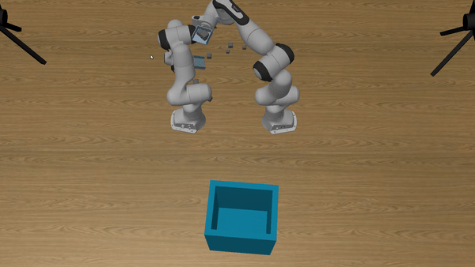

Project
Robot Pick and Place
In this project, we investigate the task of control- ling two robot arms to pick up boxes and place them at the target bin.
We design a highly efficient algorithm to solve this task and our system ranks the top on the leader board both in success rate and efficiency.

Training RBF by Reinforcement RJMCMC
Training RBF (Radial basis function) neural network is challenging, especially for the choice of hyper-parameters in each specific task.
Using the RJMCMC (Reversible-jump Markov chain Monte Carlo) to train the RBF neural network, combined with reinforcement learning,
could significantly alleviate the problem. We took the mean square error of validation set as reward and
adopted exploration and exploitation to guide the training, which achieved a favorable result.
Visual-Auditory Cross-Modality Metric Learning
We conducted metric learning aimed to match each silent video with the corresponding original audios.
We proposed a tetrad loss function motivated by triplet loss. We made data enhancement to deal with the shortage of training data and
added online hard example mining during backpropagation. Our result ranked among top5 in test sets and realized the accuracy of 97%.